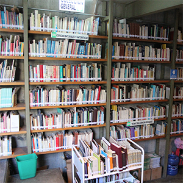

Me he desempeñado en muy pocos trabajos, pricnipalmente eran trabajos en los que el contrato era por el tiempo en que me tardara en realizar una tarea. Mi primer trabajo fue en apoyo de operaciones en la catación de la hoy "Biblioteca Cossio", inmueble arrendado por la asociación civil Apoyo al Desarollo de Archivos y Bibliotecas de México (ADABI), tiempo en el que dure 4 meses en cumplir dicho objetivo.
Por otro lado estuve trabajando durante 1 Mes en electronica "Itzel", tienda de electronica en la cual me dedique al ensamblado de componentes a tarjetas logícas dedicadas a instrumentos de salud, como incuvadoras, monitoreadores de organso, etc. Para la Empresa MEDICA-D
